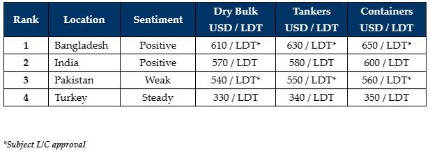

inWeekly Demolition Reports03/04/2023

As the Holy month of Ramadan descends across much of the sub-continent and Turkey, it has once again been a far quieter weekin terms of sales activity, and sentiments do seem to be more muted, with focuses currently shifted elsewhere.
With Container & Dry Bulk rates firming once again, the number of firm sales candidates also appears to have dried up and this is leaving keen recyclers empty handed for yet another week.
While there have been a plethora of sales at the start of the year, particularly in the Capesize Bulker and Container sectors, the supply has surprisingly slowed so much of late, it nearly seems like it has timed itself in sync with declining sub-continent prices.
Steel plate prices had also found themselves going through a phase of incredible volatility but seem to have stabilized (comparatively) more since, and there is still interest from the Indian and Bangladeshi markets to acquire at the present overall levels, which are hovering close to or even well above USD 600/LDT on choice units.
L/Cs remain the chief concern in Bangladesh amidst a chronic lack of liquidity in the country, and several L/Cs are left waiting for Central Bank approval, which is inevitably leading to local delays on boardings, payments, and beachings.
Owners are therefore reminded that it is not exactly business as usual (especially in Pakistan and Bangladesh to an extent), despite several sales taking place there recently.
Finally, at the far end, Turkey remains unchanged with its weekly (and marginal) fluctuations in import and local steel plate prices, as does the Lira continue on its seemingly unrelenting decline against the U.S. Dollar.
For week 13 of 2023, GMS demo rankings / pricing for the week are as below.

📄 Download PDF: Ship-recycling-market-insight-week-13-2023-More-Muted.pdf
Source: GMS,Inc. ,https://www.gmsinc.net/gms_new/index.php/web